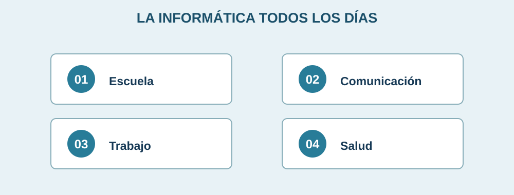

Importancia de la informática en la vida cotidiana

La informática nos permite resolver tareas con más facilidad. Se utiliza para estudiar, investigar, comunicarnos con familiares, organizar archivos y acceder a distintos servicios.
En la escuela
Ayuda a buscar información, elaborar trabajos, crear presentaciones y tomar clases en línea.
En casa y el trabajo
Sirve para enviar mensajes, comprar productos, llevar cuentas, preparar documentos y realizar reuniones.
Comparte tu opinión
Este formulario es únicamente una demostración para la materia. No envía ni almacena información. Puedes usar datos de ejemplo.